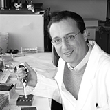
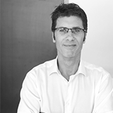
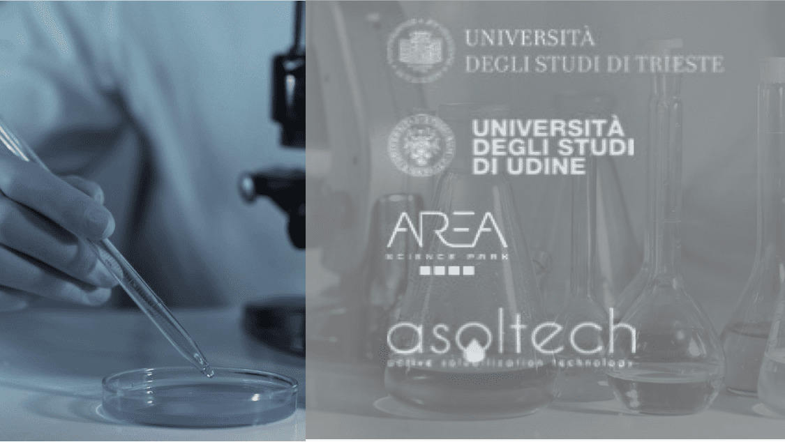

Now the company is part of Biovalley Investment Partners, a holding specialized in investments in innovative companies operating in the BioHighTech (BioMed, Biotech, BioICT) life sciences and medical markets.
Born from research, G&life has always had a serious and innovative approach to the solutions it proposes.
We are the only company in the world with a patented method, tested by a third party for 2 years on 200 people, with results presented at the international scientific conference "European Human Genetics Conference" in 2014.
We are among the first to consider both individual genetics and epigenetics in its solutions.
Years of Experience
Prizes and Awards
Patented Method

Full Professor of Medical Genetics at the University of Trieste, Director of the Department of Advanced Diagnosis and Clinical Research and Director of the Medical Genetics service, at the IRCCS Burlo Garofolo Children's Hospital of Trieste.
Winner of the Great Hippocrates Prize in 2011, thanks to his studies on the relationships between genome, dietary behavior and health implications.
He was director of the genetics division of the Sidra hospital (Doha, Qatar).
He has more than 300 publications in peer-reviewed international journals, with a total Impact Factor higher than 1900.
In 2020 he was appointed Expert in the "transfer of genomic therapy into clinical practice" by the Istituto Superiore di Sanità (National Institute of Health).
In 2021 he was appointed President of the Italian Society of Human Genetics (SIGU), the national reference structure for topics of scientific and health interest concerning Human Genetics in all its applicative aspects.

G&life CEO, Biomedical engineer, doctor of bioengineering.
He was biomedical researcher at the Politecnico di Milano and at the Italian Auxological Institute: in particular, the study of biomedical computer science and the biomechanics of human movement also in relation to obesity. In these fields he is the author of numerous international scientific publications.
In 2020 he was appointed National Expert by the Italian Ministry of Innovation and Digitization.
